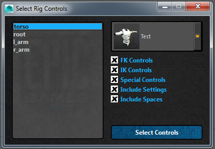
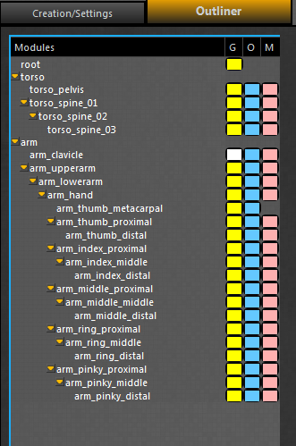
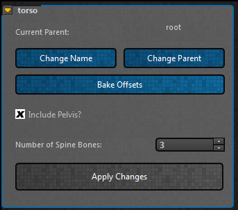

ART_Head¶
Author: Jeremy Ernst
File Attributes¶
icon: This is the image file (125x75 .png) that gets used in the RigCreatorUI
hoverIcon: When you hover over the module in the module list, it will swap to this icon (background changes to orange). There are .psd template files for these.
search: These are search terms that are accepted when searching the list of modules in the RigCreatorUI
class name: The name of the class.
jointMover: The relative path to the joint mover file. Relative to the ARTv2 root directory.
baseName: The default name the module will get created with. Users can then add a prefix and/or suffix to the base name.
rigs: This is a simple list of what rigs this module can build. This feature isn’t implemented yet, but the plan is to query this list and present these options to the user for them to select what rigs they want to build for the module. Right now, it will build all rigs.
fbxImport: This is a list that will show the options for the module in the import mocap interface. Normally, this list will have at least None and FK.
matchData: This is a list of options that will be presented for the module in a comboBox in the match over frame range interface. First argument is a bool as to whether the module can or can’t match. The second arg is a list of strings to display for the match options. For example: matchData = [True, [“Match FK to IK”, “Match IK to FK”]]
controlTypes: This is a list of lists, where each item in the main list is a list comprised of the name of the attribute that gets added to the network node that contains the control information. The second arg in each list entry is a control type, like FK or IK. This is used in the select rig controls interface for filtering out which controls on each module you want to select. On this module, the values are: controlTypes = [[“fkControls”, “FK”]], which means that the attribute that holds the control info is called fkControls, and those controls are of type FK.

Class¶
-
class
RigModules.ART_Head.ART_Head(rigUiInst, moduleUserName)[source]¶ Bases:
System.ART_RigModule.ART_RigModuleThis class creates the head module
-
__init__(rigUiInst, moduleUserName)[source]¶ Initiate the class, taking in the instance to the interface and the user specified name.
Parameters: - rigUiInst – This is the rig creator interface instance being passed in.
- moduleUserName – This is the name specified by the user on module creation.
- Instantiate the following class variables as well:
- self.rigUiInst: take the passed in interface instance and make it a class var
- self.moduleUserName: take the passed in moduleUserName and make it a class var
- self.outlinerWidget: an empty list that will hold all of the widgets added to the outliner
Also, read the QSettings to find out where needed paths are.
-
addAttributes()[source]¶ Add custom attributes this module needs to the network node.
Always calls on base class function first, then extends with any attributes unique to the class.
-
addJointMoverToOutliner()[source]¶ Add the joint movers for this module to the outliner.
Depending on the module settings, different joint movers may or may not be added. Also, each “joint” usually has three movers: global, offset, and geo. However, not all joints do, so this method is also used to specify which joint movers for each joint are added to the outliner.

-
applyModuleChanges(moduleInst)[source]¶ Update the scene after the settings are changed in the skeleton settings UI.
This means also updating the created_bones attr, updating the joint mover if needed, running self.updateNeck, updating the outliner, and updating the bone count.
Parameters: moduleInst – self (usually, but there are cases like templates where an inst on disc is passed in.)
-
buildRigCustom(textEdit, uiInst)[source]¶ Build the rigs for this module.
This method defines what rigs are built and how they are built when the asset is published. It posts any build info to the passed in textEdit.
Parameters: - textEdit – passed in text edit that the rig build can post updates to
- uiInst – passed in instance of the buildProgressUI
-
importFBX(importMethod, character)[source]¶ Import FBX motion onto this module’s rig controls.
Parameters: - importMethod – The import method to be used (options defined in the file attributes)
- character – the namespace of the character
Each module has to define what import methods it offers (at the very top of the module file) and then define how motion is imported using those methods.
-
pickerUI(center, animUI, networkNode, namespace)[source]¶ Build the animation picker for the module.
Parameters: - center – the center of the QGraphicsScene
- animUI – the instance of the AnimationUI
- networkNode – the module’s network node
- namespace – the namespace of the character
-
pinModule(state)[source]¶ Pin the module in place so the parent does not move the module. Each module has to define how it needs to be pinned.
-
skeletonSettings_UI(name)[source]¶ This is the UI for the module that has all of the configuration settings.
Parameters: - name – user given name of module (prefix + base_name + suffix)
- width – width of the skeleton settings groupBox. 335 usually
- height – height of the skeleton settings groupBox.
- checkable – Whether or not the groupBox can be collapsed.
Build the groupBox that contains all of the settings for this module. Parent the groupBox into the main skeletonSettingsUI layout. Lastly, call on updateSettingsUI to populate the UI based off of the network node values.

-
skinProxyGeo()[source]¶ Skin the proxy geo brought in by the module. Each module has to define how it wants to skin its proxy geo.
-
updateNeck(attachedModules, oldNum)[source]¶ Take the number of neck bones value and rebuild the joint mover.
The head module has 3 joint mover files, 1 for each possible neck number. When the number of neck bones is changed, the current module has its information stored (placement, etc), the module is then deleted, the new joint mover path is constructed and brought in, and lastly it resolves any dependency issues. (Like if there was a leaf joint as a child of a neck bone that no longer exists)
Parameters: - attachedModules – self.checkForDependencies()
- oldNum – the existing amount of neck bones prior to the update
-